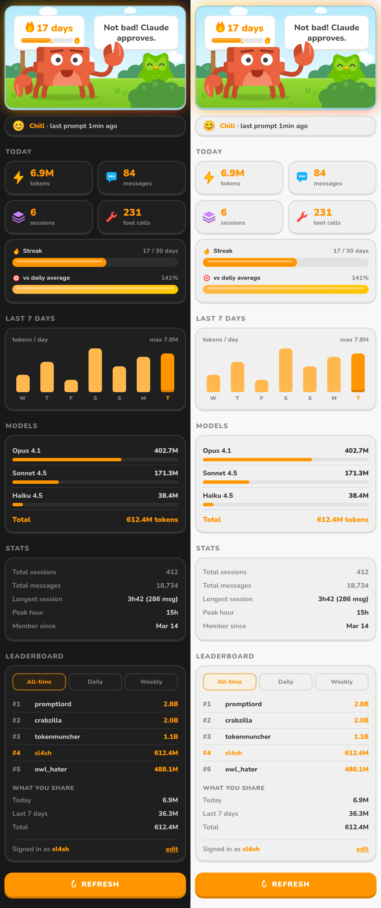

Un streak à tenir
Jours consécutifs d'utilisation de Claude. La scène s'embrase à 7, 14 et 30 jours.
Ton usage de Claude Code en temps réel dans VS Code : streak, stats du jour, classement. Et un crabe passif-agressif qui s'énerve dès que tu arrêtes de prompter.
Gratuit et open source. Nécessite VS Code 1.85+ et Claude Code.
Pas encore sur le Marketplace : on passe par le fichier .vsix de la dernière release.
Il est attaché à chaque release GitHub, généré automatiquement par la CI.
claudolingo.vsixDepuis le dossier où tu l'as téléchargé :
code --install-extension claudolingo-*.vsix
Ou dans VS Code : vue Extensions → ⋯ → Install from VSIX…
L'icône du crabe apparaît dans l'Activity Bar. Il t'attendait. Depuis un moment.
Plus ton dernier prompt est loin, plus le crabe perd ses moyens. Essaie, c'est la vraie scène de l'extension.
Clique sur le crabe. Il adore ça (non).

Jours consécutifs d'utilisation de Claude. La scène s'embrase à 7, 14 et 30 jours.
De chill à hors de contrôle selon ton dernier prompt. Le hibou, lui, finit caché dans le buisson.
Tokens, messages, sessions et appels d'outils du jour, plus la répartition par modèle.
Un graphique de tes tokens par jour pour voir si tu tiens le rythme.
Tableaux du jour, de la semaine et all-time. Opt-in : il faut choisir un pseudo pour y apparaître.
Tu utilises Copilot dans la même fenêtre ? Le crabe l'a vu. Le crabe n'oublie pas.
Une commande pour masquer le compteur de tokens et couper toutes les alertes.
Dépasse le milliard de tokens dans la journée. Tu verras bien.
Claudolingo lit les stats locales de Claude Code dans ~/.claude. Rien n'est envoyé tant que tu n'as pas choisi un pseudo pour le classement, et le backend peut être self-hosté via claudolingo.apiUrl.
Le crabe compte sur toi. Enfin, il compte surtout tes tokens.